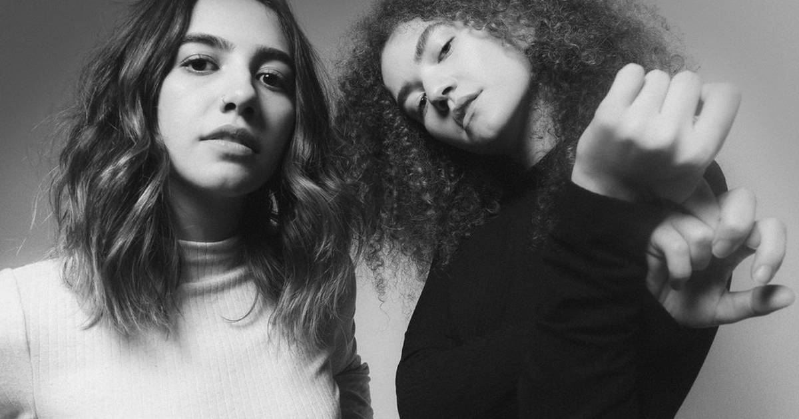

A dupla que conquistou uma multidão de fãs com sua fusão autêntica de pop e folk
O duo Anavitória é formado por Ana Clara Caetano Costa e Vitória Fernandes Falcão, duas amigas naturais de Araguaína, uma cidade com menos de 170 mil habitantes no coração do Tocantins. Ana nasceu em 5 de outubro de 1994 e sempre teve interesse pela música. Ela começou a tocar violão aos 15 anos e passou a experimentar com suas próprias composições, influenciada pelo sertanejo predominante na região, além de artistas da MPB e do folk. Vitória, por sua vez, veio ao mundo em 2 de maio de 1995 e nem sonhava em seguir carreira musical durante o começo da vida, apesar de ter crescido em uma família apaixonada por música. Embora tenham estudado durante toda a infância e adolescência na mesma escola, foi apenas em 2013, quando ambas já estavam na faculdade – Ana cursando medicina e Vitória, direito –, que a paixão pela música se tornou um projeto em comum.
O pontapé inicial da carreira da dupla não poderia ter um resultado melhor. Com duas canções autorais, Singular e Chamego Meu , e duas regravações, o duo começou a colher os primeiros frutos pelo trabalho. Após o lançamento do primeiro EP, em 2015, as cantoras promoveram uma campanha de financiamento coletivo para arrecadar mais de R$ 60 mil para gravar o primeiro álbum completo, Anavitória , lançado em agosto de 2016 pela gravadora Universal Music. Com produção de Tiago Iorc, o disco misturou influências da música interiorana, MPB e pop, e ajudou a definir o estilo autêntico do duo, que elas mesmas chamam de pop rural. Com músicas como Agora Eu Quero Ir, que integrou a trilha sonora da novela Malhação: Pro Dia Nascer Feliz, e Dengo, presente na novela Pega Pega, o álbum conquistou o público brasileiro. A aceitação foi tão grande que a dupla logo iniciou sua primeira turnê nacional, levando suas canções para diversos estados do Brasil.
Com a carreira já consolidada, o duo Anavitória continuou a expandir sua discografia com projetos inovadores. O segundo álbum, O Tempo é Agora, chegou às plataformas em 2018 e apresentou uma sonoridade mais madura da dupla, que conquistou o Grammy Latino de Melhor Álbum Pop Contemporâneo em Língua Portuguesa. No mesmo ano, as cantoras estrearam nos cinemas com o filme Ana e Vitória, uma comédia musical que mesclou ficção e realidade ao retratar a história do duo, com exibição em mais de 200 salas de cinema de todo o Brasil. Em 2019, a dupla promoveu o lançamento de N (2019), um álbum dedicado a reinterpretações de canções de Nando Reis que apresentou à nova geração alguns dos grandes sucessos do veterano, como Pra Você Guardei o Amor. Além disso, Anavitória também investiu em projetos especiais, como o Festival NAVE, que reuniu diversos artistas da nova cena musical brasileira, e o documentário Anavitória: Araguaína – Las Vegas, que narra a jornada das cantoras até a conquista do Grammy. Em 2021, chegou ao público Cor, um disco introspectivo e sensível, que trouxe participações de Rita Lee – em Amarelo, Azul e Branco – e Lenine, levando a um novo Grammy Latino na categoria de Melhor Álbum Pop Contemporâneo em Língua Portuguesa. Esquinas, lançado em dezembro de 2024, reafirma a identidade artística das cantoras, com sucessos como Doce futuro, Se eu usasse sapato e Minto pra quem perguntar.
"Nem todo mundo tem a sorte que nós dois tivemos juntos, e é tão bom saber que alguém que me conhece assim tão bem existe"
Água-viva
"Tu é trevo de quatro folhas, é manhã de domingo à toa, conversa rara e boa, pedaço de sonho que faz meu querer acordar pra vida"
Trevo (Tu) (part. Tiago Iorc)

Você pode conhecer mais sobre a dupla clicando aqui
Você pode ver mais frases de músicas clicando aqui